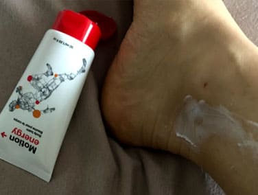
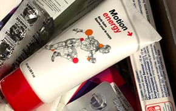

Myslela jsem si, že mám infarkt, ale byla to osteochondróza.
Povím vám, jak jsem se zbavila nepříjemných příznaků, zapomněla na svoji nemoc a rychle se vrátila k aktivnímu životnímu stylu.

1180 zobrazení
Bolest v ramenou, lopatkách a na hrudi, potíže s dýcháním. První, co vás napadne je srdce. Není na co čekat - měli byste si zavolat záchranku. Přesně to udělali moji kolegové, když se mi udělalo špatně v práci.
EKG vyšetření potvrdilo, že mám srdce v pořádku. V nemocnici mi udělali kompletní vyšetření a zjistilo se, že mám hrudní osteochondrózu. To jsem nečekala! Sportuji, dělám jógu a spím na ortopedické matraci. Všechno tohle bylo k ničemu…
Odborníci mi dali seznam komplexní léčby s chodroprotektivními léky, neuroleptiky, sedativy a doporučili mi sezení s fyzioterapeutem. Všechna doporučení jsem jako zodpovědný pacient dodržovala. Na jedné lekci fyzioterapie jsem měla nehodu - najednou jsem nemohla otočit hlavou, ani zvednout ruce. Jakýkoli pohyb mi působil bolest. Když instruktor viděl, jak trpím, začal se mě vyptávat na můj problém. Když jsem mu řekla svoji diagnózu, chytl se za hlavu:
Proč jste nic neřekla? S vaší nemocí je veškeré cvičení zakázané. Musíte se nejprve zbavit bolesti. Tento problém je možné vyřešit za týden. Potom budete moci dělat cvičení pro zpevnění svalů a pevnější zdraví.
Otírala jsem si slzy a se zájmem jsem instruktora poslouchala.
Po celém světě lidé s touto diagnózou žijí naplno a na bolest si ani nevzpomenou. Chcete, abych vám pomohla? Věřte mi, bolest zmizí navždy a vy budete opět moci sportovat bez rizika zranění.
Tak jsem se dozvěděla o . Samozřejmě jsem už věděla o léčivé síle eukalyptu, ale asi jsem tomu úplně nevěřila. Vše ale bylo jednoduché - tento gel je velmi účinný a snadno se používá. Můžete ho používat i v práci a nikdo si toho nevšimne. Je úžasný! Samozřejmě jsem požádala trenéra, aby mi pomohl ho objednat. Pomohl mi získat tento gel se slevou, platila jsem jen poloviční cenu. Skvělá cena za pevné zdraví.
Gel mi doručili o tři dny později. První dojmy byly dobré - měl lehkou konzistenci a příjemnou eukalyptovou vůni. Hlavní je to, že obsahuje pouze přírodní složky, jako je eukalyptový a skořicový olej a extrakt ze zázvoru. Žádné chemické ani syntetické látky.
Rozhodla jsem se, že gel ihned vyzkouším. Řídila jsem se radami svého trenéra a nanesla gel na krk, přímo na bolavé místo. Během několika minut jsem cítila příjemné teplo, uvolnění napětí a zmírnění tuhosti svalů. Poprvé po dlouhé době jsem se dobře vyspala a nebudila jsem se v noci!

Používám gel každé ráno a každý večer, bolest zmizela a mám nyní spoustu energie! Po týdnu pravidelného používání jsem na všechny nepříjemné příznaky zapomněla.
Tento gel používám už více než 2 měsíce. Za tu dobu jsem zapomněla na osteochondrózu i bolest, začala jsem opět chodit do posilovny a dokonce jsem se přihlásila na lekce tance. Nyní mohu s jistotou říci, že je fantastické řešení a klíč k pevnému zdraví. Mimochodem, tento gel můžete používat nejen pro léčbu zranění, ale také jako prevenci před cvičením - ochrání vaše svaly a klouby při zátěži. Používají ho i sportovci: můj trenér mit o prozradil, ale nikomu to neříkejte!
Pokud trpíte osteochondrózou nebo jinou chronickou nemocí, řiďte se touto radou - objednejte si . Řeknete sbohem únavě, špatné náladě a bolesti a vychutnáte si pocit lehkosti a příval energie. Takto se budete cítit pokaždé, když tento gel použijete. Pokud máte zájem, zde je odkaz na webovou stránku výrobce. V tuto chvíli nabízí 50% slevu - pospěšte si a kupte si tento produkt, který zlepší zdraví vám i vaší rodině.
Kdo by řekl, že něco tak jednoduchého pomůže vyřešit tak vážný problém, Ze začátku jsem si myslela, že to je jen další zbytečná mast, která nepomůže, ale rychle jsem změnila názor. Tento gel funguje skvěle, dokonce lépe, než profesionální masáž. Po jeoh použití jsem cítila příjemné teplo a bolest zmizela. Je opravdu skvělý!
Odpovědět SdíletZačala jsem tento gel používat teprve nedávno, ale zatím jsou moje dojmy jen pozitivní. V minulosti jsem používala produkt od jiné značky, byl k ničemu, vůbec nezabíral, a měl tak silný zápach, že mi z něj bylo cítit povlečení i oblečení dva týdny. Teď používám a jsem spokojená.
Několik let jsem trpěl bolestí za krkem. Masáže nepomáhaly, zkusím tento gel , je to moje poslední naděje.
Odpovědět SdíletObjednala jsem pro svého dědečka. Má artrózu v kolenním kloubu, nemůže skoro ani chodit po domě. Po 2 týdnech používání běhá s vnoučaty! Dokonce jsme plánovali, že půjde na operaci… Děkujeme za tento zázrak!
Rozhodně mám v plánu to zkusit. Trpím vleklými bolestmi beder, už to nemůžu vydržet.
Odpovědět SdíletJá toho o rehabilitaci hodně vím z první ruky a mohu říct toto: je lepší, než jakákoli fyzioterapie. Bez ohledu na to, jaké problémy máte - klouby, šlachy, svaly - vám pomůže je překonat. Neodkládejte to, péče o vaše zdraví by měla být vaší prioritou!
Jsem důchodce a mít takovou věc doma je rozhodně výhoda. Křeče v zádech, bolesti kolene, vyhozené rameno, poškozené vazy… Tento gel je univerzální, můžete si s ním masírovat jakoukoli část těla, kdykoli budete potřebovat. A nemusíte ani chodit k lékaři, ti z vás stejně jen tahají peníze a předepisují chemikálie.
Odpovědět SdíletJe to skvělá věc. Vždy se po použití cítím plná energie. Stačí nanést na bolavé místo a bolest zmizí během několika minut! Tento gel používá i moje rodina. Je čas doplnit zásoby ! :)
 Odpovědět SdíletMůj osobní trenér mi doporučil používat , řekl mi, že to je nejlepší věc na uvolnění po cvičení. Musím s ním rozhodně souhlasit. Svalové napětí zmizelo a na bolest jsem zapomněl už dávno. Moje tělo je v dobré kondici a cítím se skvěle.
Odpovědět SdíletŘekla bych, že jsem docela zdravá, ale utrpěla jsem zranění při pádu (zlomená ruka). Loket mě hodně bolí. Nemám čas na masáže ani cvičení, proto je pro mě skvělý objev. Používám tento gel vždy, když cítím bolest, a brzy je mi zase lépe. Na svoje staré zranění jsem úplně zapomněla a dokonce můžu tento kloub zatěžovat! Je skvělé moci žít opět naplno!
Dozvěděla jsem se o díky lekcím jógy - instruktorka nám tento gel doporučila po cvičení a na zranění. Toto doporučení se mi hodilo - jednou jsem si při cvičení zranila rameno. mě zachránil! Tento produkt se opravdu vyplatí. Je úžasné, že něco tak jednoduchého tak skvěle funguje.
Po vyšetření mi lékař doporučil sérii bolestivých masáží. Byla jsem tam dvakrát, plakala jsem bolestí a pak jsem to vzdala. Začala jsem samozřejmě hledat alternativu, a našla jsem - je to gel: vyřešil všechny moje problémy během jednoho týdne. Teď ho mám stále po ruce a používám ho kdykoli je třeba.
Odpovědět Sdíletje skutečný zázrak. Bolest ihned zmizela. Pokud máte sedavé zaměstnání, nebo pracujete fyzicky, tento gel rozhodně potřebujete ve své domácí lékárničce.
 Odpovědět SdíletZajímavé, chci to zkusit
Odpovědět SdíletObjednala jsem tento gel a opravdu mají 50% slevu, děkuji za tuto nabídku. Pokud je ale pravda, co všichni píšou, nevadilo by mi zaplatit ani plnou cenu.
Odpovědět Sdílet